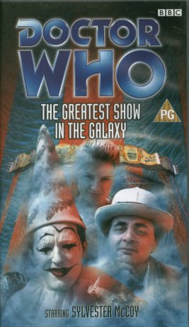
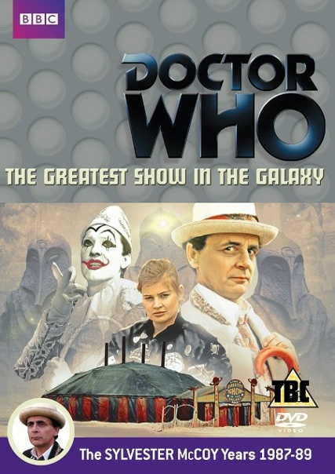
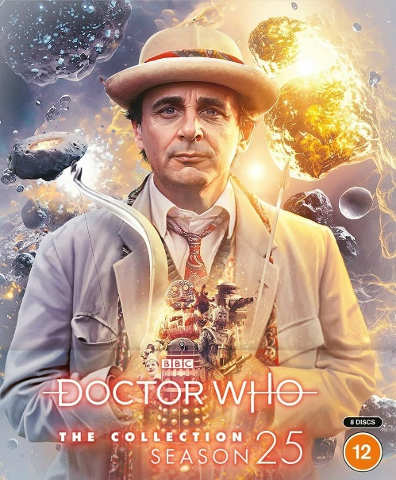
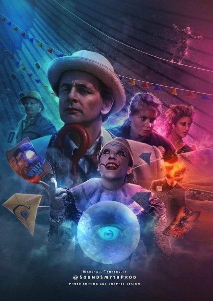
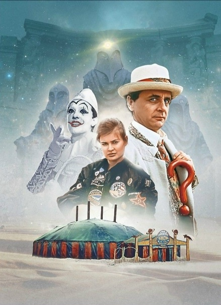
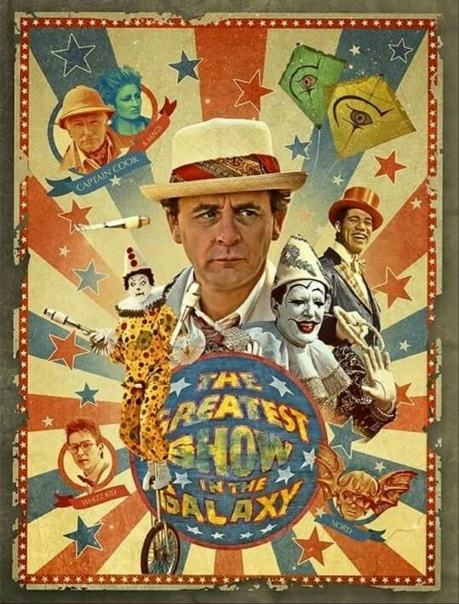

Эра Седьмого Доктора (25 сезон)
<<< НАЗАД ||| 4. Величайшее шоу в галактике ||| ДАЛЬШЕ >>>
|  |
|---|---|
Субтитры: Русские и Английские | |
с обновленными спецэффектами Субтитры: Русские и Английские | |
+ Расширенная версия (эпизоды 1, 3) с обновленными спецэффектами Субтитры: только Английские | |
The Greatest Show in the Galaxy
Дата выхода: 14 декабря 1988 - 4 января 1989
Формат: 4 эпизода по 25 мин.
 |
Доктор и Эйс прибывают на планету Сегонакс, где среди унылых пустошей стоит психоцирк. Среди других гостей — байкер Норд, занудный исследователь Капитан Кук со своей компаньонкой Мэгс и юный фанат. Цирком управляет зловещий Главный клоун и его труппа роботов-клоунов, а единственные зрители — странная семья из трёх человек, которая никогда не аплодирует. Эйс боится клоунов, но Доктор решает разобраться, что здесь происходит.
Сценарий Стивена Уайатта. Сильвестр Маккой — профессиональный фокусник — сам выполнял все трюки на арене, включая жонглирование и фокусы. Серия хронологически идёт раньше «Патруля счастья» и «Серебряной Немезиды» — порядок трансляции поменяли из-за Олимпиады, из-за чего возникла ошибка непрерывности: в предыдущих сериях Эйс уже носит серёжку Флауэрчайлд.
 VHS - январь 2000 |  DVD - 30 июля 2012 |  Blu-ray - 28 октября 2024 * Версия в нашей группе |
|---|







Трейлер: